حياة بين الكادرات
أيام مع أميرة
ليست كل اللحظات جزءًا من المشهد الأخير.
بعيدًا عن الأفلام والصور والكلمات، هناك لحظات صغيرة تشكّل ما نصنعه دون أن ننتبه. أشخاص نلتقي بهم، وأماكن نجد أنفسنا فيها، وأحاديث تظل معنا، وذكريات نحملها إلى حكايتنا القادمة. هنا تعيش تلك اللحظات.
بين صفحات اليوميات
01 — فصل
قبل الكادر
شيء من التأمل، وشيء من الإصغاء، وبداية لحكاية.
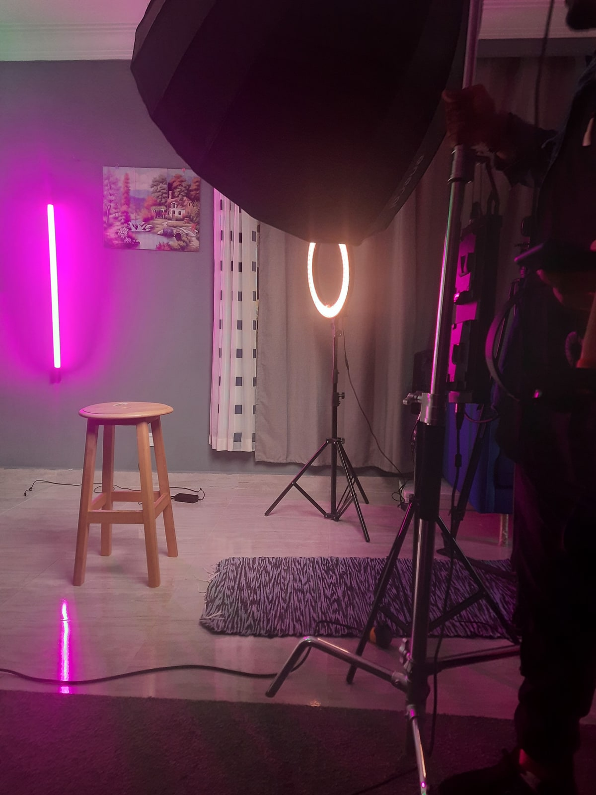
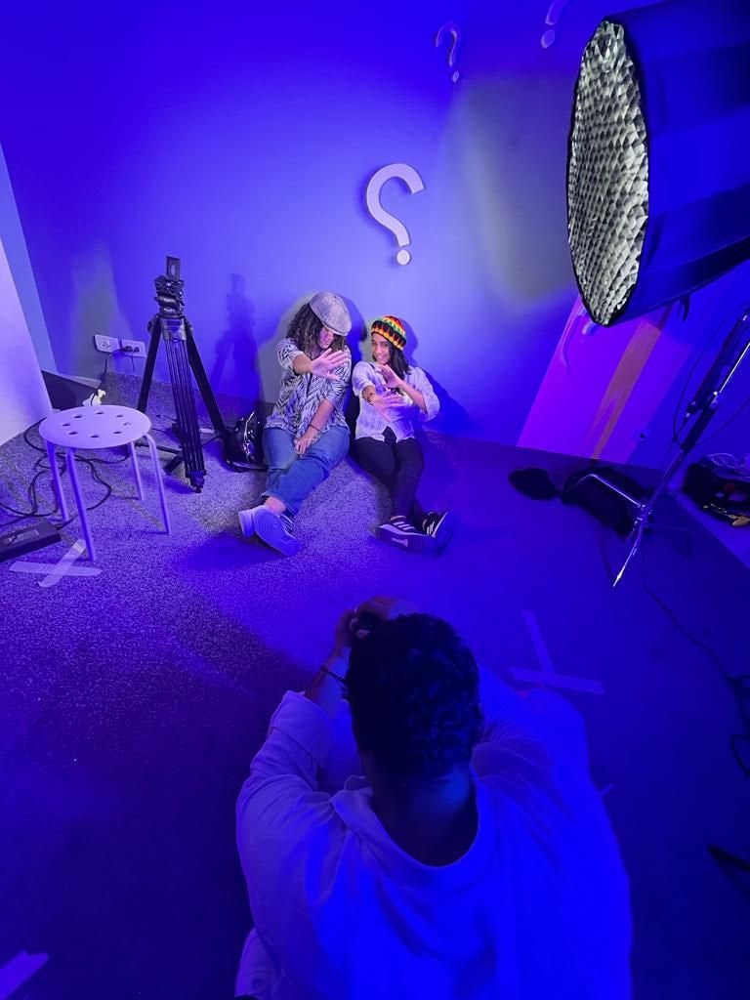

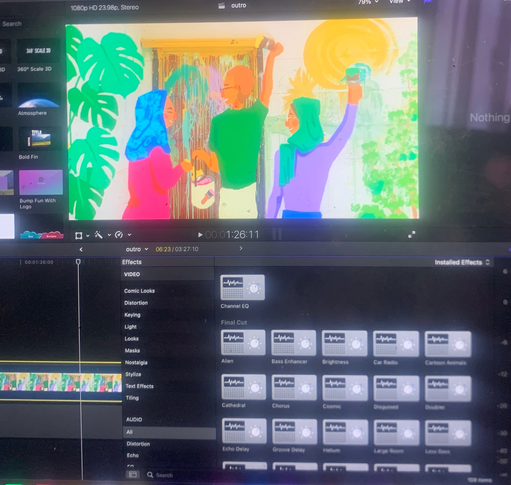

02 — فصل
عندما تنطفئ الأضواء
شاشة ومكان ولحظة نتقاسمها.


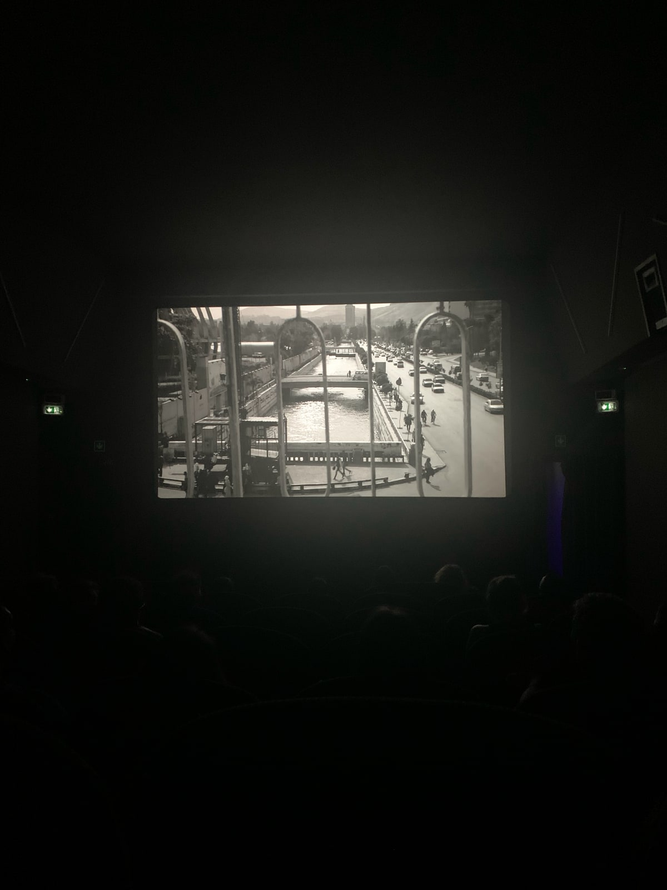


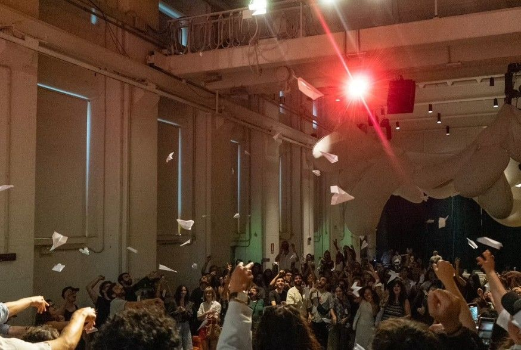
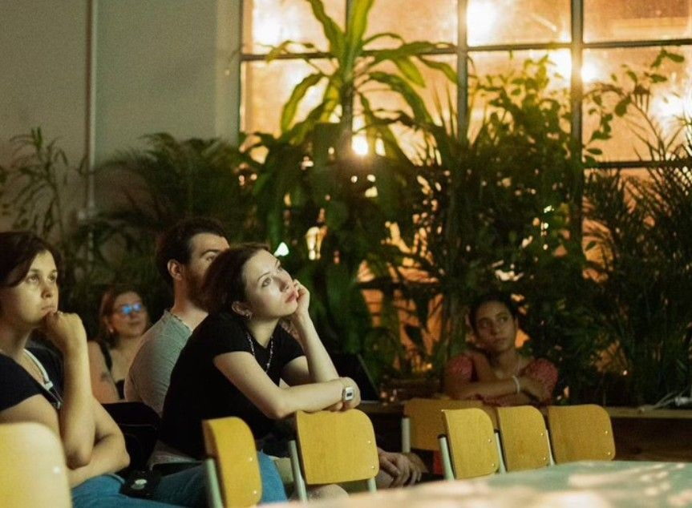
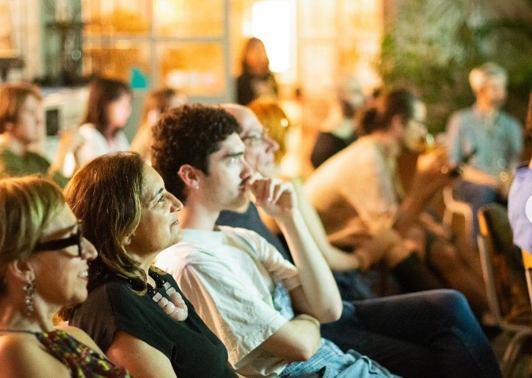

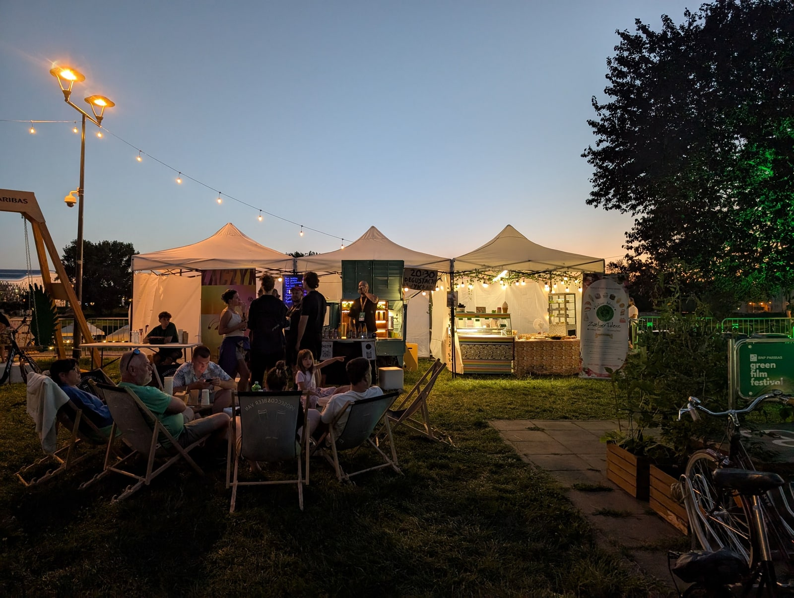
03 — فصل
أشخاص نلتقي بهم
بعض الحكايات تبدأ بحديث.
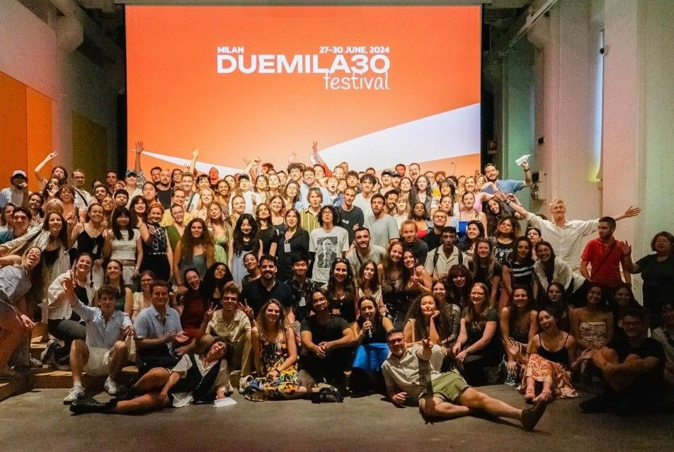


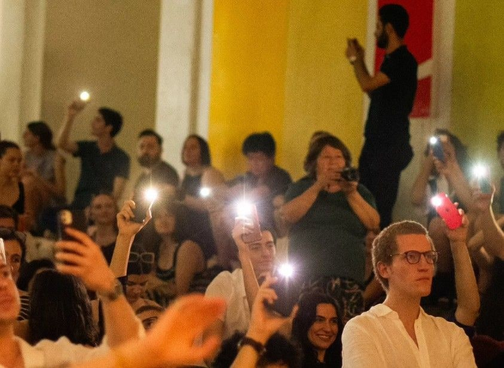

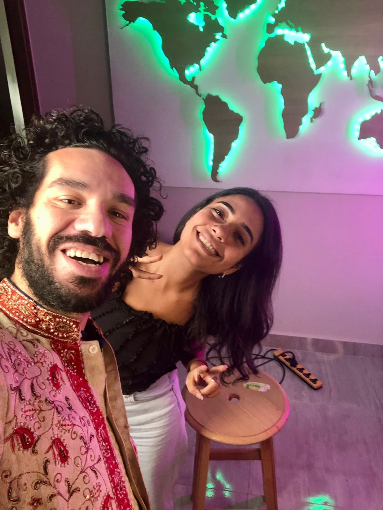

04 — فصل
في مكان ما من الرحلة
المسافات الصغيرة بين وجهة وأخرى.
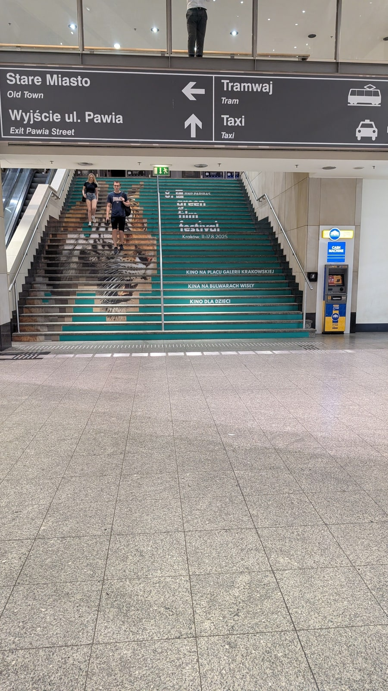
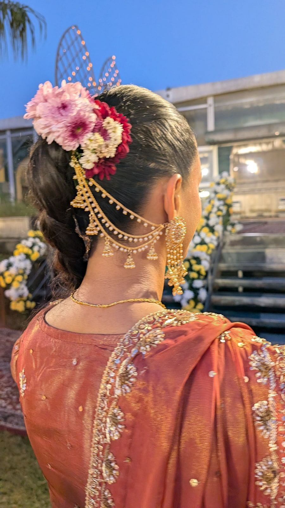

05 — فصل
التفاصيل الصغيرة
تفاصيل صغيرة تبقى معنا.